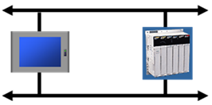
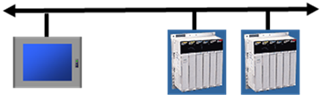
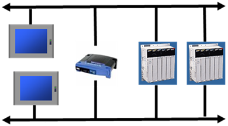

|
|
|
|
|
|
|
|
To provide increased system availability and reliability, in Vijeo Designer you can set up a Modbus dual Ethernet connection between the target machine and one or more PLCs. Redundant connections provide the following benefits:
Alternate communication paths for the PLC
Increased reliability in system design
Continuous monitoring of the redundant Ethernet paths and notification in the event of a loss of communication on either path.
When a communication error occurs on the primary connection, the driver will detect the communication failure and will retry on the secondary IP address. The driver properties indicate the driver status, which will be altered to indicate the primary connection is down and the secondary connection is in use to resume communication. The driver will periodically check the primary connection, and if the connection does come back up, the status will be updated to indicate the primary connection is up. Communication remains on the secondary connection, until the operator requests a switch or a communication error occurs. To make the switch to another connection, use the driver properties.
You can set up either a UDP/IP or TCP/IP network configuration. The UDP/IP network connection is used when connecting to a device that only supports UDP as the connection type.
The following images show examples of the different types of network configurations that may be used with this feature.
Ethernet

Ethernet
Ethernet

Ethernet

Ethernet
Set up the Modbus TCP/IP device driver. For more information, see Section 5.2.1, Adding a Device Driver.
Configure the communication settings for the driver in the Driver Configuration dialog box. For more information, see Section 5.2.2, Configuring Communication Settings.
Configure the communication settings for the equipment in the Equipment Configuration dialog box. For more information on the Modbus TCP/IP equipment properties, see Section 26.3.6, Changing I/O Manager Communication Settings: Schneider Electric. For the Modbus TCP/IP device driver, you must define the following settings to set up the Modbus dual Ethernet connection:
IP Address – Enter the primary IP address.
Secondary Connection – For a PLC with two Ethernet ports, enable this check box to allow a secondary IP address to be entered.
Backup IP – Enter the secondary IP address.